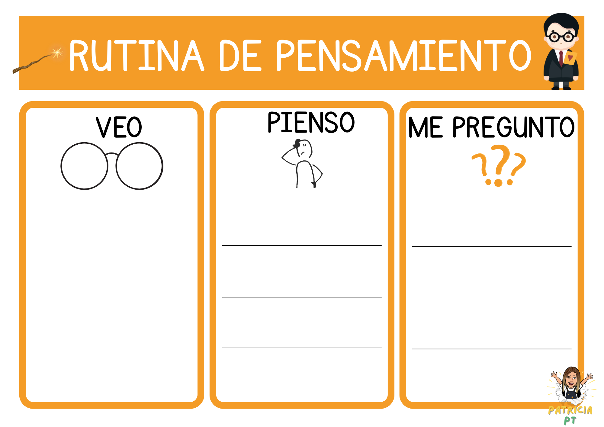
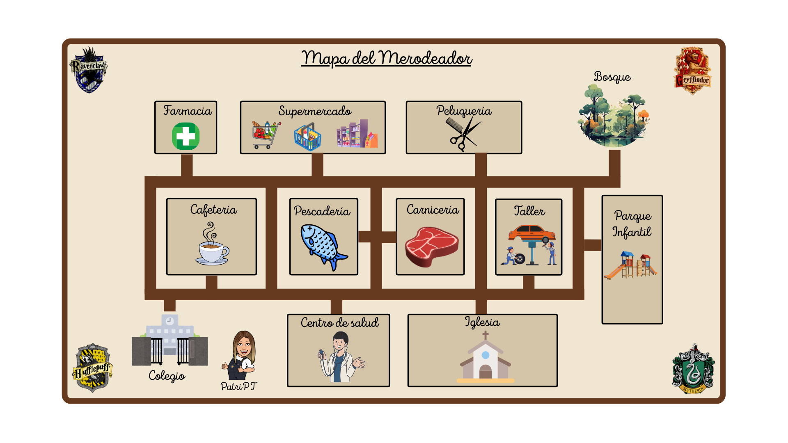

<br>
¡Equipos guardianes, vuestra misión continúa!
Ya habéis despertado vuestras ideas, habéis reflexionado sobre los problemas del bosque y habéis comenzado a pensar como auténticos protectores de la naturaleza. Ahora es momento de organizar todo ese aprendizaje siguiendo un camino muy especial.
Para poder cumplir nuestra misión y crear unos folletos que realmente ayuden a cuidar el bosque, vamos a seguir una línea temporal de actividades. En ella encontraréis cada paso del proyecto, desde la investigación inicial hasta la creación final del folleto.
A lo largo de este recorrido:
- Activaréis lo que ya sabéis sobre la naturaleza.
- Investigaréis usando recursos digitales fiables.
- Trabajaréis en equipo compartiendo ideas.
- Diseñaréis vuestro folleto de concienciación.
- Y reflexionaréis sobre todo lo aprendido.
Cada actividad es una etapa importante de vuestro entrenamiento como guardianes y guardianas. Si seguís el camino paso a paso, estaréis cada vez más cerca de vuestra misión final: proteger y dar voz al bosque.
¡Adelante, el bosque cuenta con vosotros!
<br>
{kind=link}
1. Investigamos el bosque prohibido
¡Comienza vuestra misión, equipos guardianes!
El primer paso de vuestro viaje os llevará al misterioso Bosque Prohibido, un lugar lleno de secretos que necesitamos descubrir para poder protegerlo mejor. Antes de crear vuestros folletos, es importante activar todo lo que ya sabéis sobre los textos informativos y sobre cómo cuidamos nuestro entorno.
En esta actividad vais a explorar qué es un folleto informativo y cuáles son sus partes principales. Para ello, utilizaréis una rutina de pensamiento que os ayudará a organizar vuestras ideas, reflexionar y compartir lo que ya conocéis sobre el tema.

Vuestras respuestas se recogerán de forma interactiva a través de Mentimeter, donde podréis participar, ver las ideas de vuestros compañeros y construir conocimiento entre todos de manera visual y dinámica.
Recordad: no hay respuestas incorrectas, solo ideas que nos ayudan a empezar a construir nuestro camino como guardianes y guardianas del bosque.
¡Preparados, listos… comenzamos a investigar el bosque prohibido!
2. El mapa del merodeador.
¡Guardianes y guardianas, seguimos avanzando en nuestra misión!
El bosque prohibido esconde caminos secretos y rutas que debemos aprender a interpretar para no perdernos en nuestro recorrido. En esta actividad vais a convertir vuestra mano en una herramienta de exploración: necesitaréis precisión, atención y mucha concentración para seguir el camino correcto.
Trabajaremos la orientación en el plano, identificando la ruta desde el colegio hasta el punto de llegada marcado en el mapa. Utilizaréis un punzón para ir trazando el recorrido, desarrollando así la motricidad fina y la capacidad de observación espacial.

Para apoyar vuestra investigación, utilizaremos Google Maps, que nos permitirá ver el recorrido real, identificar lugares importantes y comprender mejor el camino que vamos a representar.
Además, algunos compañeros y compañeras contarán con un plano adaptado como el de arriba que contará con apoyo visual para facilitar el seguimiento de la actividad, asegurando que todos puedan participar en esta misión.
¡Concentración, precisión y espíritu explorador! Cada trazo nos acerca un paso más a dominar los secretos del bosque.
3.¿Qué te ha tocado?
¡Equipos guardianes, es hora de poner a prueba vuestro ingenio!
En vuestra misión por proteger el bosque, también necesitaréis habilidades matemáticas para resolver retos y tomar decisiones rápidas. En esta actividad vais a demostrar todo lo que sabéis sobre números, cálculo y comparación.
Utilizaremos una ruleta mágica que os dirá vuestro reto. Cuando la hagáis girar, os tocará un color… y con él, una tarjeta con una misión matemática diferente:
- Ordenar números de mayor a menor
- Usar los signos “mayor que” y “menor que”
- Resolver sumas
- Practicar cálculo mental rápido
Se trata de una actividad multinivel, por lo que cada reto se adaptará a vuestro nivel para que todos podáis participar y avanzar en la misión. Podemos descargar la actividad pinchando aquí.
Los compañeros y compañeras que lo necesiten contarán con apoyos visuales, autoinstrucciones y adaptaciones específicas para ayudarles a seguir los pasos con seguridad y autonomía.
Para esta actividad crearemos y utilizaremos la ruleta en Wordwall, que nos permitirá jugar, aprender y resolver retos de forma divertida e interactiva.
¡Atención, guardianes! Cada respuesta correcta os acerca un poco más a dominar los secretos del bosque.